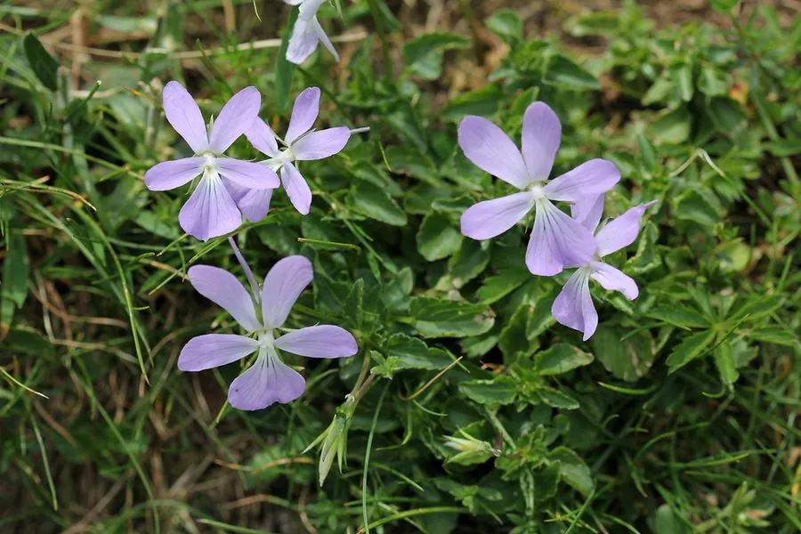

花卉与草本 · 植物界
角堇 Viola cornuta

堇菜科多年生草本，花朵小巧、色彩丰富，耐寒性强，是冬春与早春花坛、吊篮的常用花卉，原产西班牙与法国南部。
- 分类
- 门被子植物门纲木兰纲目金虎尾目科堇菜科属堇菜属
- 栖息环境
- 西班牙与法国南部的山地草甸，喜凉爽、湿润
- 地理分布
- 原产西班牙、法国南部，现世界各地栽培，中国各地冬春花坛常见
- 保护级别
- 暂无评估
物种志
角堇为堇菜科堇菜属多年生草本，常作一二年生栽培，株高 10–20 厘米，茎匍匐或丛生。叶片卵形至心形，边缘有圆齿。花单生，直径 2–3 厘米，有紫、蓝、黄、白及复色，花瓣上有斑纹，花期 11 月至翌年 5 月；果实为蒴果。
角堇原产西班牙和法国南部的比利牛斯山区，喜凉爽、阳光充足和湿润的环境，耐寒不耐酷热，是冬春季节花坛和吊篮的重要材料。它比三色堇植株更小、花朵更密，开花量极大，常成片种植形成花毯；花色丰富，还有香味品种。栽培以秋播为主，花后修剪可促进再次开花；在长江流域可露地越冬，北方则需移入室内或覆盖保护过冬。
形态与习性
- 株高10–20 厘米，茎匍匐或丛生
- 花期11 月至翌年 5 月
- 果期花后结蒴果
- 光照喜充足阳光，也耐半阴
- 水分喜湿润，忌积水
- 土壤疏松肥沃、排水良好的壤土
- 主要用途冬春花坛、吊篮、盆栽
趣味知识
- 角堇比三色堇植株更小、花朵更密，开花量极大。
- 它耐寒性强，是冬春季节花坛的重要色彩来源。
- 角堇原产比利牛斯山区，喜凉爽而不耐酷热。
- 部分角堇品种带有香味，可用于香花布置。